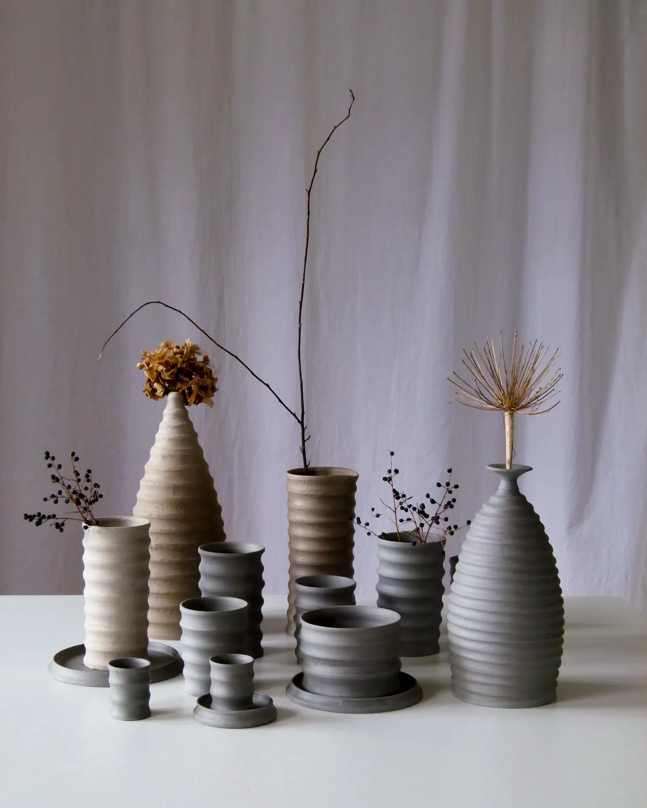
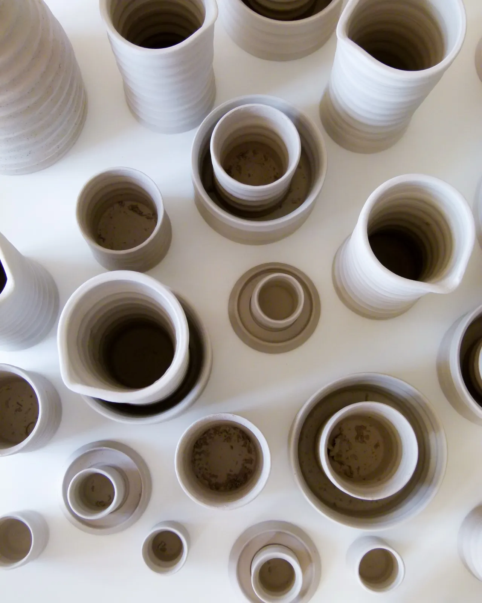
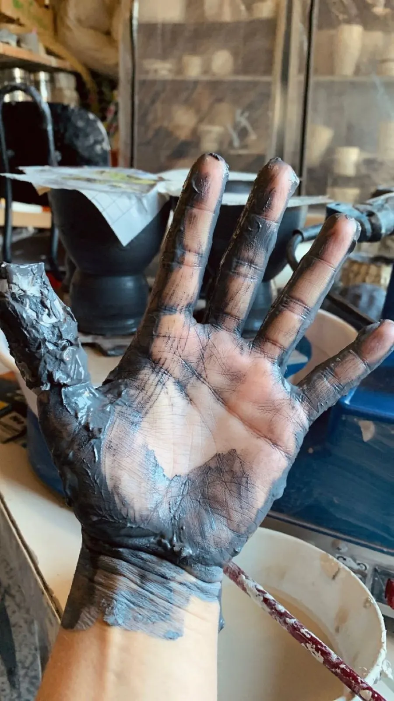
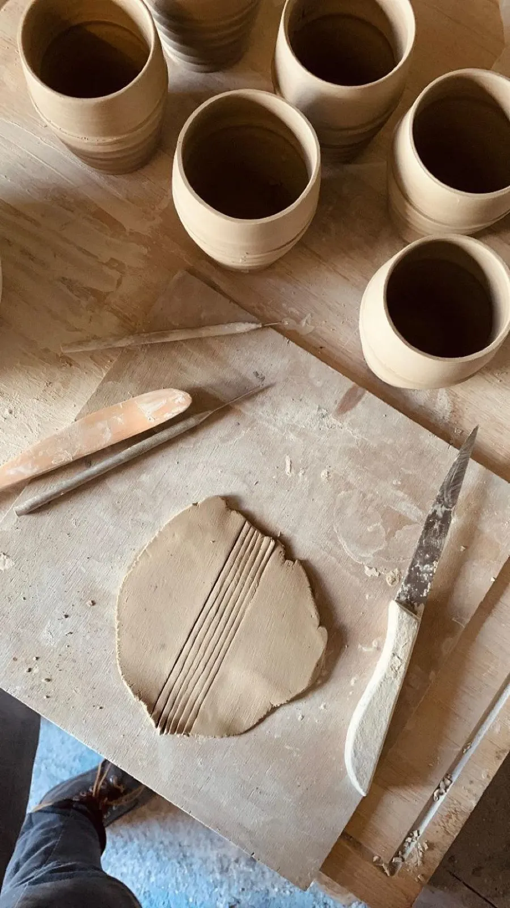
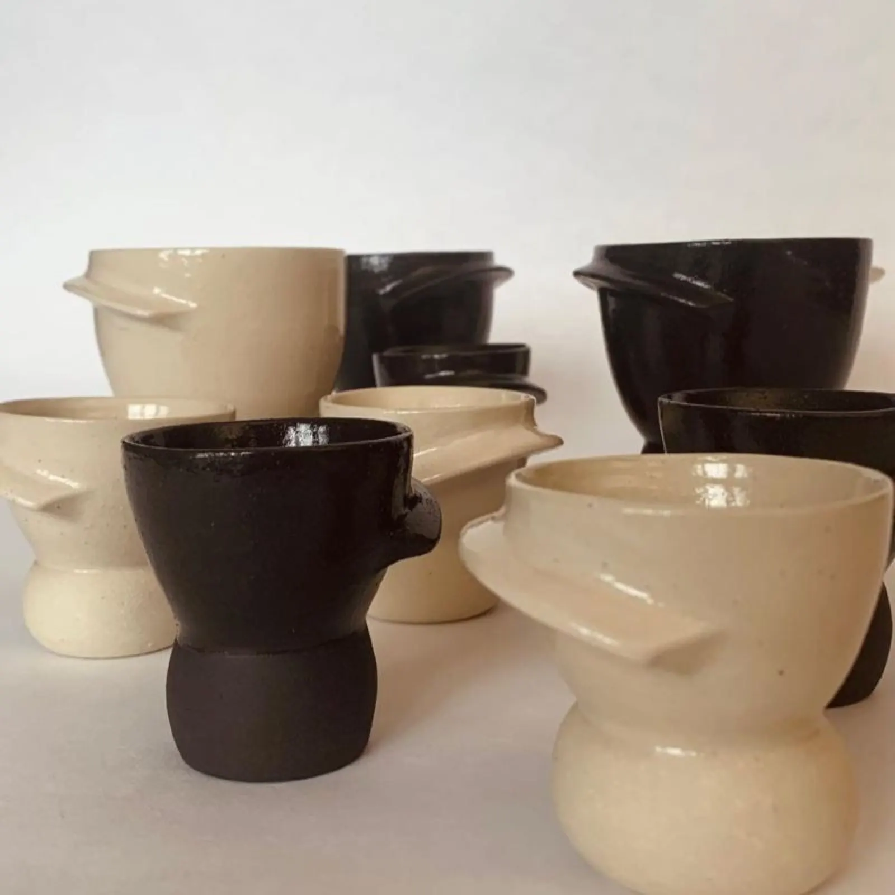
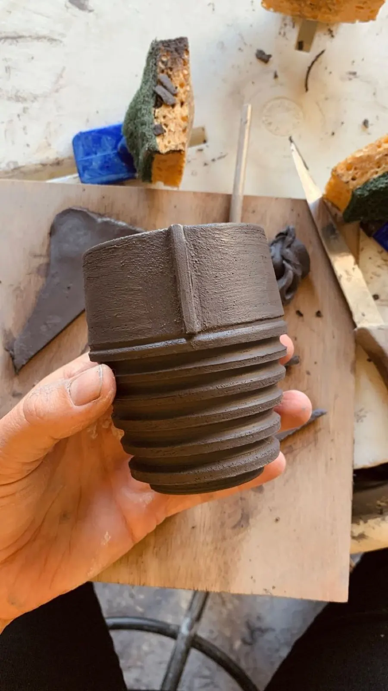
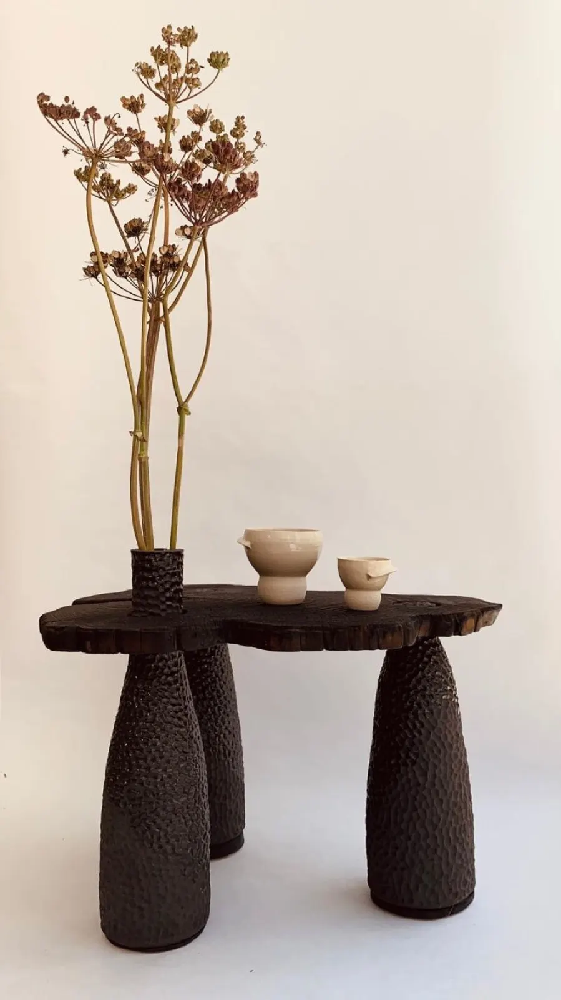
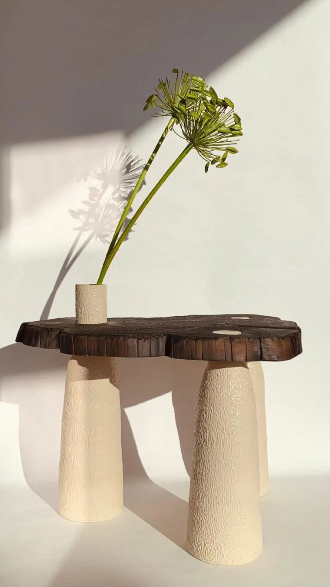

Rendre beau le quotidien, surprenante la tasse banale

Marie tourne une collection de vaisselle et des vases pièces uniques en grès brut, dans son atelier face à l'océan, au port de Moulin-Mer, à Logonna-Daoulas.
- Port de Moulin-MerLogonna-Daoulas, Finistère
- Grès tournéVaisselle et vases pièces uniques
- 3 ventes éphémèresEn ligne, chaque année
- Artisan Valeurs ParcAtelier labellisé

Le grès brut, au centre du dessin
Sur les parois se côtoient la terre nue en partie basse et le grès souligné d'un émail transparent en partie haute. Il en découle une ligne épurée et minimaliste, pour des pièces intemporelles.
Vases, mugs, tasses à café, lampes, table basse : la collection de l'atelier, véritable hommage à la terre.
Deux mois, de la boule de grès à la tasse
À l'atelier, je vous fais parcourir les étapes des deux mois de production qui donnent vie à chaque poterie.
-

Le tournage
Une boule de grès brut prend forme sur le tour.
-

Le tournassage
Les pièces crues sont reprises à l'outil.
-

L'émaillage
L'émail transparent souligne le haut, la terre reste nue en bas.
Les cours à l'atelier
Une parenthèse créative face à l'océan, au port de Moulin-Mer : modelage d'un vase ou découverte du tour de potier, guidés par moi-même, artisane potière.

-
Découverte du tour de potier
85 €Explorez les secrets du tournage.
Réserver -
Modelage : créez votre vase
65 €Les techniques fondamentales du modelage de l'argile, pour un vase personnalisé.
Réserver -
Carte cadeau, tour et modelage
65 à 135 €Un cours de poterie à offrir.
Offrir -
Journée Yoga et Poterie à Brest
Yoga en musique le matin, brunch chez Welli Chéri, initiation au modelage l'après-midi.
Prochaine journée -
Retraite Yoga et Poterie
420 €Trois jours d'immersion face à l'océan, sur la presqu'île de Crozon.
Réserver
Les journées et retraites Yoga et Poterie sont accessibles aux débutants, tout le matériel compris.


Les pièces de l'atelier
De la vaisselle aux pièces uniques, jusqu'à la table basse en bois brûlé sur pieds de grès.
Chaque céramique est réalisée à l'atelier de Logonna-Daoulas. On les trouve en direct à l'atelier, et sur la boutique en ligne lors des trois ventes éphémères de l'année.
« J'aime l'idée que l'on puisse insuffler de la beauté dans ces indispensables compagnons. »
Le dessin
Marie se forme au stylisme et au modélisme à ESMOD, où le dessin prend une place centrale.
L'entreprise
Elle crée une première marque de vêtements, bio et engagée, puis fait ses armes en développement produit chez Caravane.
Le tour
Retour à ses premières amours, fabriquer de ses mains : elle touche un jour un tour de potier, et le coup de foudre est immédiat.
Où trouver les pièces
- À l'atelier, sur rendez-vousMoulin-Mer, 29460 Logonna-Daoulas
- Sur la boutique en ligneLors des trois ventes éphémères de l'année
- Chez Empreintes5 rue de Picardie, 75003 Paris
- L'atelier
- Moulin-Mer
29460 Logonna-Daoulas - Téléphone
- 06 24 65 02 35
- @labeautedesbanalites